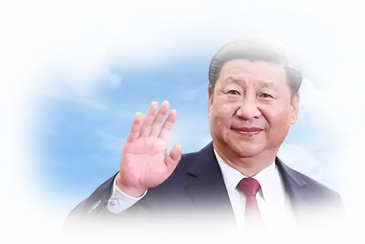
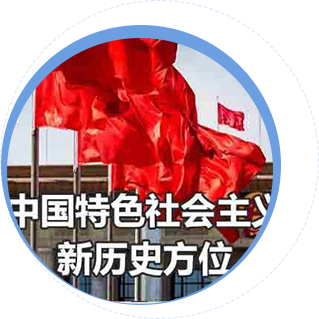

一个国家，一个民族，要同心同德迈向前进，必须要有
一个具备强大凝聚力、感召力、引领力的指导思想。只有确立正确的指导思想
才能迎领复兴走向新征程，国家才能走向更加辉煌的未来
中国特色社会主义进入新时代，这是我国发展新的历史方位。
习近平新时代中国特色社会主义思想集中体现了当代中国马克思主义最新成果，是当前和今后相当长时期党和国家事业发展的行动纲领和科学理论指导。
深入贯彻落实习近平新时代中国特色社会主义思想，必将为全面建成小康社会、
夺取社会主义现代化建设新胜利凝聚起伟大而磅礴的力量。


初心与使命，激励前进的根本动力
习近平新时代中国特色社会主义思想深深蕴含着中国共产党人的初心和使命。

一、历史地位
十九大报告指出，“经过长期努力，中国特色社会主义进入了新时代，这是我国发展新的历史方位”。
二、鲜明主题
三、奋斗目标
中国梦是以习近平同志为核心的党中央提出的重要思想，是当今中国发展进步的奋斗目标。十九大报告对“两个一百年的奋斗目标”做了新的战略安排，
提出“在全面建成小康社会的基础上，分两步走在本世纪中叶建成富强民主文明和谐美丽的社会主义现代化强国”。
四、发展理念
五、发展布局
经济建设、政治建设、文化建设、社会建设、生态文明建设的“五位一体”，是中国特色社会主义的总体布局。全面建成小康社会，全面深化改革、全面依法治国、全面从严治党是中国特色社会主义的战略布局。
六、发展动力
改革是推动社会发展的重要动力。全面深化改革是全面建成小康社会及实现中华民族伟大复兴战略目标的重要举措。
七、发展保障
八、安全保障
十九大报告提出，要“明确党在新时代的强军目标是建设一支听党指挥、能打胜仗、作风优良的人民军队，把人民军队建设成为世界一流军队”。新时代的强军方略是要坚持政治建军、改革强军、科技兴军、依法治军。
九、外部环境
十九大报告指出，“明确中国特色大国外交要推动构建新型国际关系，推动构建人类命运共同体”。中国要进一步为促进人类和平、发展与进步的崇高事业做出积极贡献。
十、政治保证
十一、治国理政世界观方法论
要“坚持解放思想、实事求是、与时俱进、求真务实，坚持辩证唯物主义和历史唯物主义”，要坚持科学的思维方法，提高战略思维、历史思维、辩证思维、系统思维、创新思维、法治思维、底线思维能力，要把马克思主义哲学的创新成果作为治国理政的世界观方法论。
十二、治国理政价值观
为中国人民谋幸福和为中华民族谋复兴，为人类进步事业而奋斗。坚持以人民为中心的发展思想，不断促进经济社会的发展和人自身的全面发展。中国梦归根到底是人民的幸福梦。
开发团队：杨鸿 陈深 张燕琼